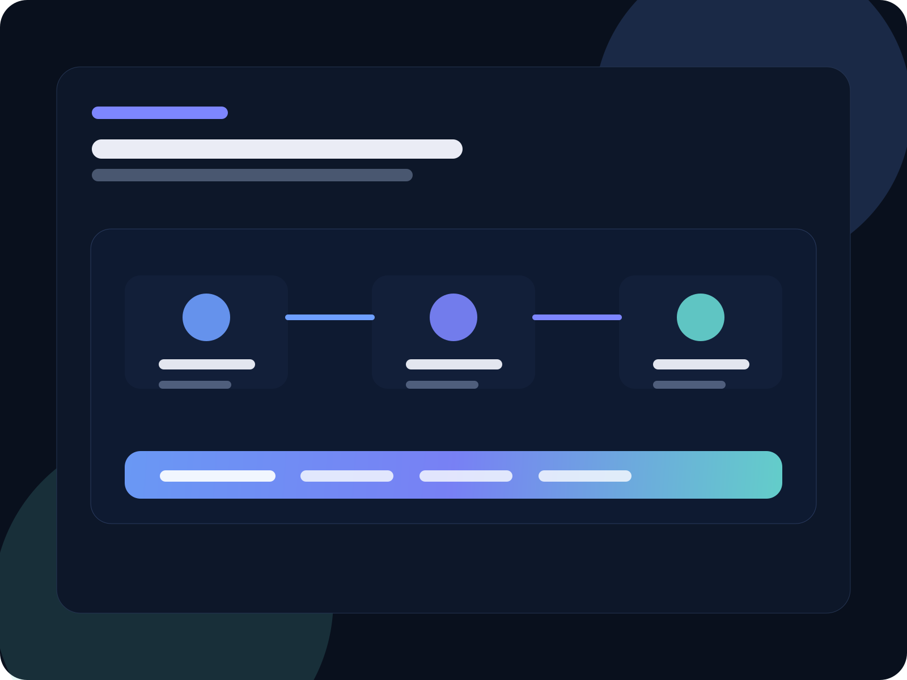

一人公司官网 How It Works 页面怎么写：别把服务流程写成流水账，先让人知道开始后会发生什么
很多一人公司网站并不是没有服务流程，而是把流程写成了“我们会先沟通、再执行、再复盘”的空列表。用户看完以后，还是不知道自己会经历什么、什么时候该继续、值不值得现在就点咨询。真正有效的 how it works 页面，不是把步骤写更多，而是把开始后的体验讲清楚。
这轮重看 Stripe 的 Contact Sales、Linear 的 Contact、Zendesk AI、Intercom Fin，以及 Notion Forms，会发现高质量服务页都在做同一件事：先把人送到正确下一步，再告诉他这个下一步会发生什么。
Stripe 第一屏不是先堆字段，而是先说 Let's get you to the right place；Linear 不是先讲产品有多复杂，而是先问 How can we help?；Zendesk 和 Intercom 都没有把重点放在功能名词上，而是一直围绕 resolution、outcome、continuous improvement 来写；Notion Forms 甚至直接把重点写成 right where you work，意思是提交之后不是掉进黑箱，而是继续进入工作流。
对一人公司官网来说，How It Works 页面最重要的任务，不是证明你流程很完整，而是让访客在 30 秒内看懂：我从这里开始之后，会得到什么、要做什么、什么时候会有人接住我。
这也是为什么很多服务流程页明明排了 5 步、6 步、7 步，结果还是不转化。问题不在步数，而在它们没有把“结果、判断、下一步”写进流程里。看起来像流程，读起来却像说明书。

这轮搜索里，最值得直接吸收的 5 个页面写法
| 参考来源 | 标题角度 / 开头写法 | 模块结构 | CTA 与关键词覆盖 |
|---|---|---|---|
| Stripe Contact Sales | 开头先讲“把你送到正确的地方”，不是先让用户研究一堆选项。 | 轻字段表单 → 提交后回应预期 → 更快连接动作（聊天 / 预约）→ 兜底联系。 | 高频词是 contact、sales、quick details、within one business day、schedule a call；CTA 极少且主次很清。 |
| Linear Contact | 第一句直接问“我们怎么帮你”，先做分流，不先讲品牌故事。 | Sales / Support 两个入口 → 社区 / Docs / Email 辅助路径 → 状态信号。 | 高频词是 help、sales、support、demo、docs、community；CTA 是明显分流型。 |
| Zendesk AI | 不先讲 AI 功能清单，而是先讲 service resolutions，强调结果。 | 结果承诺 → How it works → agent / copilot / admin 模块 → 数据证明 → FAQ。 | 高频词是 resolve、automation、productivity、scale、trust；CTA 服务于“开始 / 定价 / 更多信息”。 |
| Intercom Fin | 直接强调 resolves the most complex queries，并用 flywheel 讲持续优化。 | 能力结果 → 连续改进闭环 → 集成方式 → 技术信任 → 定价与启动路径。 | 高频词是 resolve、continuous improvement、integration、outcome、performance；CTA 强调 setup 快、兼容现有系统。 |
| Notion Forms | “Forms, right where you work” 先把流程接续感说清，而不是先说字段类型。 | 集成工作区 → 自定义 → workflow automation → responses live in Notion → template。 | 高频词是 workflow、responses、share、embed、customize；CTA 轻，但路径特别顺。 |
把这些页面放在一起看，会更容易发现一个共识：高质量的流程页，不把“步骤”写成孤立节点，而是把“进入、处理、结果、分流、下一步”写成同一条路。这对一人公司尤为重要，因为你没有大团队可以替你兜信任，就更需要让用户先看懂节奏。
为什么很多一人公司的 How It Works 页面，看完还是没人继续走
1）只写动作，不写结果
“沟通需求、制定方案、开始执行、交付复盘”这些词本身没有错，但它们只是在说你会做什么，没有告诉用户他会拿到什么。Zendesk 和 Fin 的写法都在提醒一件事：用户先看的是结果，不是内部步骤名。
2）第一屏没有做分流判断
Stripe 和 Linear 都先把人送到正确入口。很多一人公司流程页则默认所有人都应该从同一条路径开始，结果就是高意图用户觉得慢，低意图用户又不知道自己是不是该继续。
3）流程里没有“提交后会发生什么”
这是最常见的断点。用户能看到你有 3 步、5 步、6 步，但不知道提交咨询后多久会有人回、先收到什么、是先判断还是直接推进。流程页如果没有这层回应预期，就会像停在门口的指示牌。
4）把后台过程暴露得太像内部 SOP
流程页不是工作台。用户不需要先知道你后台分了几个文件夹、跑了几轮检查、怎么排优先级，他需要知道的是：现在自己该做什么、你会怎么接、什么时候进入下一步。Notion 的强点就在这里——讲 workflow，但不把内部流程写成噪音。
5）CTA 太多，读完最后反而散掉
很多页面前面讲流程，后面突然并排放微信、邮箱、表单、电话、加群、下载文档。这样看起来很热闹，但会把前面的流程承接全部打散。Stripe 的做法更值得学：主动作永远清楚，辅助动作只在需要时出现。
更适合一人公司官网的 How It Works 页面，建议按这 6 个模块写
模块 1：第一屏先讲“你会被带到哪里”，不是先讲我们有多专业
第一页最值钱的不是介绍自己，而是降低对方开始的心理成本。可以像 Stripe 一样，先把它写成“先把你送到正确的下一步”；也可以像 Linear 一样，先把它写成“你现在更需要哪种帮助”。对一人公司网站来说，第一屏最好同时出现 3 个信息：适合谁、先发什么、多久能得到方向。
模块 2：把流程写成“用户视角的 3 步或 4 步”，不要写成内部流水账
用户更容易理解的是“先判断 → 再给参考 → 再推进 → 再保温”，而不是“访谈、拆解、规划、执行、复盘”这种站在你这边的词。流程页真正该做的，是帮用户看懂自己会经历什么，而不是展示你后台的任务列表。
模块 3：每一步都补一句“你会拿到什么”
这是把流程页从空模板拉回转化页的关键。比如第一步不是只写“沟通”，而是写“先帮你判断现在最该先动首页、联系页，还是 intake 流程”；第二步不是只写“给方案”，而是写“给你 2–3 个更值先动的选项”。这样，用户每读一步都能感觉到收益在前进。
模块 4：把“提交后会发生什么”单独写出来
这部分特别值得向 Stripe 学。不是默认用户自己懂，而是直接写出来：工作日多久回应、是否会先做 15 分钟判断、如果暂时不继续会怎么收口。很多咨询页和流程页最后差的，就是这段回应预期。
模块 5：保留 1 个主 CTA，其他都做辅助路径
How It Works 页面不是下载中心，也不是导航页。看完流程以后，用户最该看到的是一个最明确的下一步：预约判断、提交表单、发第一条消息，三者通常只留一个主动作最稳。其他入口保留为辅助阅读，不抢主线。
模块 6：底部加 1 组信任与边界说明
Fin 和 Zendesk 都在告诉用户：为什么这套流程可信、适合什么场景、不适合什么场景。对一人公司来说，这一步尤其重要。不是为了显得门槛高，而是为了减少错误期待，让真正适配的人更容易继续。
如果你的页面同时承担“咨询前承接”，最适合直接套这 4 段节奏
这一段特别适合服务站、联系页、How It Works 页面共用。因为它既符合用户阅读顺序，也符合真实承接顺序：先接住，再给证据，再推进，再留轻量下一步。
先围绕用户发来的页面、截图或卡点，确认这次最该先看什么。不在第一轮就做销售，而是先让对方感觉“被正确接住了”。
回给他最接近场景的页面、案例、FAQ 或结构参考，让抽象问题快速变成可对照的判断。
把下一步收口成 2–3 个选项，例如先改联系页、先补 intake、先接 FAQ 或先理服务流程，不让用户继续散着想。
如果对方暂时没准备继续，就留一个更轻的继续动作，例如先看案例、先自查一篇文章、先带着截图回来，而不是继续追着推销。
How It Works 页面可以直接照这个骨架改
- Hero：先写清这页的目的，是帮助用户看懂开始后的路径，而不是品牌介绍；
- 适配判断：什么情况建议现在开始，什么情况建议先看 FAQ / 文章 / 方案页；
- 3–4 步流程：按用户视角写每一步会发生什么；
- 每步结果：补上这一步用户会拿到什么、知道什么；
- 提交后预期：回应时间、先给什么、有没有轻量下一步；
- 单一 CTA：只保留 1 个主继续动作，其余作为辅助自查入口。
更像会转化的标题：先看你从这里开始后会发生什么
更像会转化的副标题：不是先聊一堆大词，而是先判断你现在最该先改哪一页、哪一步、哪条承接链路。
更像会转化的主 CTA：预约 15 分钟适配判断
如果你做的是一人公司官网、AI 团队、内容生产、客户承接、OpenClaw / 飞书接入这类服务型网站，这个骨架尤其适合。因为用户来这里，通常不是为了研究概念，而是为了判断：这件事能不能开始、从哪开始、值不值得现在开始。
如果这页承接的是高意图搜索词，早期可先看每月 80–250 次精准访问是否稳定；配合首页、方案页、文章页内链后，再看能否逐步提升到 250–600 次。
How It Works 页面最关键的是从首页、解决方案页、文章页被点进来的比例。早期先观察 12%–22% 的内部点击是否稳定，再看 CTA 点击是否明显高于旧版流程页。
更核心的是看页面到底有没有把人送进主动作。若承接的是预约或联系页，早期可以先盯 3%–8% 的主 CTA 转化；如果旧页几乎没人继续走，先看是不是“结果没讲清 + CTA 太多”。
本方案风险：如果你只是把流程步骤排得更整齐，却没有补“每一步的结果、提交后的预期、唯一主 CTA”，页面会更像一份好看的说明书，但不一定更能让人继续；若出现这种情况，则调整为：先把 Hero、3–4 步结果、提交后预期和主 CTA 收口，再回头补视觉和次级说明。
最后一句：流程页不是展示你怎么工作，而是让用户敢开始
真正有效的 How It Works 页面，不会让人看完以后只记住“你有 5 个步骤”，而会让人感觉“我知道现在该不该继续，也知道继续以后会发生什么”。
这才是一人公司官网最该追求的流程页体验：不假装复杂，不空谈专业，而是把开始后的路径讲清楚，把第一次动作做轻，把下一步收得足够明确。
如果你怀疑自己的网站不是没有流程，而是流程页没把人送进下一步
先别急着重写全站。先检查三件事：第一屏有没有先讲结果；流程每一步有没有写“你会拿到什么”；底部是不是只剩 1 个主继续动作。把这三处收好，通常比继续加步骤更值。
先看联系页当前承接方式 →- 解决方案页当前版本：看看“先按真实卡点分流，再讲 3 步怎么开始”是怎么落到前台的。
- 联系页当前版本：如果你更关心提交后会发生什么，这页的承接更直接。
- 服务流程蓝图旧文：适合对照看“内部流程写法”和“前台转化写法”的区别。
- 咨询表单 intake 页写法：如果你的流程页同时接咨询表单，这篇可以一起看。
- 联系页首条消息优化：如果你想把“点进来以后第一句怎么发”一起接住，这篇更适合配套看。
How It Works 页面一定要单独做一页吗？
不一定。如果你的服务很聚焦，完全可以把它放在解决方案页中段或联系页前半段。关键不在页数，而在它有没有把“开始后的路径”讲清楚。
流程写 3 步还是 5 步更好？
通常 3–4 步更容易读完。除非你的服务天然需要更细分的阶段，否则步数太多会让用户先感到复杂。先把最关键的判断点和交付点写清楚，比多写 2 步更重要。
服务流程页和价格页、联系页会不会重复？
会有交叉，但职责不同。价格页回答“怎么选”，联系页回答“怎么开始联系”，How It Works 页面回答“开始后会发生什么”。只要这三页职责分清，就不是重复，而是接力。